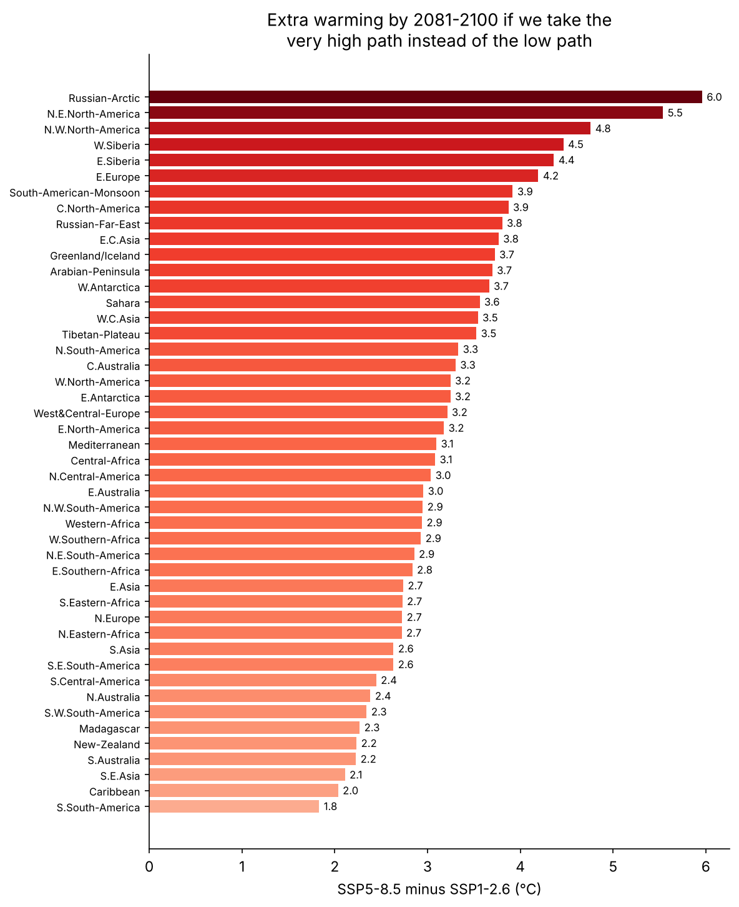

How much hotter will your part of the world get, and how much of that is still up to us?
Chaylen Nguyen-Tran, Jeffrey Kang, Peter Little, Jayleen Shang
Dataset
We will use CMIP6 (Coupled Model Intercomparison Project, Phase 6) from the NOAA public
dataset on Google Cloud, one of the Project 3 datasets. CMIP6 holds simulations from climate models run by
research centers worldwide under a shared set of experiments.
Aspect
What we use
Variable
tas, near-surface air temperature, monthly (Amon); precipitation (pr) as a possible second measure
Experiments
historical (1850 to 2014) + four future scenarios (2015 to 2100): SSP1-2.6, SSP2-4.5, SSP3-7.0, SSP5-8.5
Models
7 models with all five experiments: ACCESS-CM2, CanESM5, GFDL-ESM4, IPSL-CM6A-LR, MIROC6, MPI-ESM1-2-LR, MRI-ESM2-0 (member r1i1p1f1)
Space
46 IPCC AR6 land regions, plus a few cities snapped to the nearest grid cell
Processing: Kelvin to °C, monthly to annual means, cos(latitude)-weighted region averages,
years capped at 2100, warming relative to each model's 1850-1900 mean, median plus min/max across models,
and a 10-year rolling mean. The result is a small CSV (region, scenario, year, median, low, high) that D3
loads directly. Code: preprocessing.ipynb.
What we intend to do
We will build an explorable explanation: a scrolling article that walks readers through future warming,
with interactive D3 graphics woven into the text.
And: the planet has already warmed, and every region shares that same past. The article opens with a warming-stripes view of the reader's chosen region.
But: after 2015 the future forks into four emissions paths, and the gap between them is huge. Some regions face nearly 6°C more warming under very high emissions than under low emissions.
Therefore: the path we choose decides when, and whether, each region crosses key thresholds like +2°C.
Readers pick their region (from a map or a list) at the start, and every later graphic updates to that
region, so the story is about where they live. Planned interactions: a map that recolors as the reader drags
a year slider, scenario toggles, a +2°C threshold slider that shows when each region crosses it, and hover
details with the model range.
This builds on our Project 3 chart (one region, four paths) but reframes it as a guided story with a map,
personalization, and annotated takeaways instead of a single chart.
Static visualizations
All six use our processed CMIP6 data (7-model median, warming vs 1850-1900). Each maps to a step in the story.
Code: static_figures.py.
1. Warming stripes: one past, four futures
Each stripe is one year in Western North America, colored by warming, and the rows split by scenario after 2015.
2. The fork after 2015
Land regions have already warmed about 1.2°C, and by 2100 the paths range from about 2°C to 6°C.
3. Same scenarios, different regions
Under the same scenarios, Arctic and northern regions warm far more than the tropics.
4. When do thresholds arrive?
In Western North America, +3°C never arrives by 2100 under SSP1-2.6, but +4°C arrives in the 2060s under SSP5-8.5.
5. The cost of the path
Taking the very high path instead of the low path adds about 1.8°C to 6°C of late-century warming, depending on the region.

6. How fast it is warming
Warming speeds up from about 0.16°C per decade historically to 0.23 to 0.49°C per decade by 2060, depending on the path.